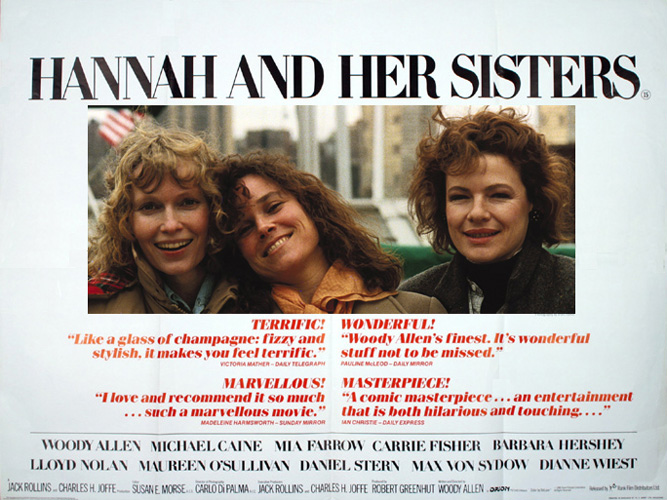
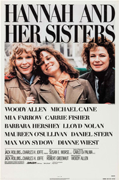
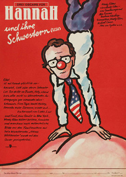
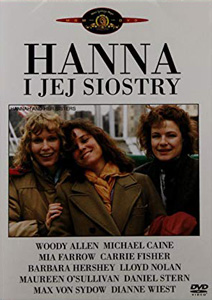

Several of Farrow's children (including a pre-adolescent Soon-Yi Previn) have credited and uncredited roles, mostly as Thanksgiving extras.
The story is told in three main arcs, with most of it occurring during a 24-month period beginning and ending at Thanksgiving parties hosted by Hannah (Mia Farrow) and her husband, Elliot (Michael Caine). Hannah serves as the stalwart hub of the narrative; most of the events of the film connect to her.
Elliot becomes infatuated with one of Hannah's sisters, Lee (Barbara Hershey), and eventually begins an affair with her. Elliot attributes his behavior to his discontent with his wife's self-sufficiency and resentment of her emotional strength. Lee has lived for five years with a reclusive artist, Frederick (Max von Sydow), who is much older. She finds her relationship with Frederick no longer intellectually or sexually stimulating, in spite of (or maybe because of) Frederick's professed interest in continuing to teach her. She leaves Frederick after he discovers her affair with Elliot. For the remainder of the year between the first and second Thanksgiving gatherings, Elliot and Lee carry on their affair despite Elliot's inability to end his marriage to Hannah. Lee finally ends the affair during the second Thanksgiving, explaining that she is finished waiting for him to commit and that she has started dating someone else.
Hannah's ex-husband Mickey (Woody Allen), a television writer, is present mostly in scenes outside of the primary story. Flashbacks reveal that his marriage to Hannah fell apart after they were unable to have children because of his infertility. However, they had twins who are not biologically his, before divorcing. He also went on a disastrous date with Hannah's sister Holly (Dianne Wiest) when they were set up after the divorce. A hypochondriac, he goes to his doctor complaining of hearing loss, and is frightened by the possibility that it might be a brain tumor. When tests prove that he is perfectly healthy, he is initially overjoyed, but then despairs that his life is meaningless. His existential crisis leads to unsatisfying experiments with religious conversion to Catholicism and an interest in Krishna Consciousness. Ultimately, an unsuccessful suicide attempt leads him to find meaning in his life after unexpectedly viewing the Marx Brothers' Duck Soup in a movie theater. The revelation that life should be enjoyed, rather than understood, helps to prepare him for a second date with Holly, which this time blossoms into love.
Holly's story is the film's third main arc. A former cocaine addict, she is an unsuccessful actress who cannot settle on a career. After borrowing money from Hannah, she starts a catering business with April (Carrie Fisher), a friend and fellow actress. Holly and April end up as rivals in auditions for parts in Broadway musicals, as well as for the affections of an architect (Sam Waterston). Holly abandons the catering business after the romance with the architect fails and decides to try her hand at writing. The career change forces her once again to borrow money from Hannah, a dependency that Holly resents. She writes a script inspired by Hannah and Elliot, which greatly upsets Hannah. It is suggested that much of the script involved personal details of Hannah and Elliot's marriage that had been conveyed to Holly through Lee (having been transmitted first from Elliot). Although this threatens to expose the affair between Elliot and Lee, Elliot soon disavows disclosing any such details. Holly sets aside her script, and instead writes a story inspired by her own life, which Mickey reads and admires greatly, vowing to help her get it produced and leading to their second date.
A minor arc in the film tells part of the story of Norma (Maureen O'Sullivan) and Evan (Lloyd Nolan). They are the parents of Hannah and her two sisters, and still have acting careers of their own. Their own tumultuous marriage revolves around Norma's alcoholism and alleged affairs, but the long-term bond between them is evident in Evan's flirtatious anecdotes about Norma while playing piano at the Thanksgiving gatherings.
By the time of the film's third Thanksgiving, Lee has married someone she met while taking classes at Columbia, while Hannah and Elliot have reconciled their marriage. The film's final shot reveals that Holly is married to Mickey and that she is pregnant.
Part of the film's structure and background is borrowed from Ingmar Bergman's Fanny and Alexander. In both films, a large theatrical family gather for three successive years' celebrations (Thanksgiving in Allen's film, Christmas in Bergman's). The first of each gathering is in a time of contentment, the second in a time of trouble, and the third showing what happens after the resolution of the troubles. The sudden appearance of Mickey's reflection behind Holly's in the closing scene also parallels the apparition behind Alexander of the Bishop's ghost. Additional parallels can be found with Luchino Visconti's 1960 film Rocco and His Brothers, which, besides the connection to its name, also uses the structural device of dividing sections of the film for the different siblings' plot arcs.
Hannah and Her Sisters received seven Academy Award nominations, including one for Best Picture. Allen's writing received an Oscar for Best Writing, Screenplay Written Directly for the Screen and he earned a nomination for Best Director. Caine and Wiest each won Oscars, for Best Actor and Best Actress in Supporting Roles, the first film to win both supporting actor awards since Julia in 1977. The film was also nominated for Best Art Direction, Set Direction and Best Film Editing. The film is Allen's biggest box office hit thus far. Adjusted for inflation it falls behind Annie Hall and Manhattan, and possibly also one or two of his early comedies and has only just been overtaken by Midnight in Paris.
Many of Hannah's scenes were filmed in Mia Farrow's own apartment. Woody Allen said that Farrow once had the eerie experience of turning on the television, finding a chance broadcast of the movie, and seeing her own apartment on television - while she was sitting in it.
"Woody Allen's Hannah and Her Sisters is the best movie he has ever made." - Roger Ebert : Chicago Sun-Times
"The marvel of Hannah and Her Sisters is just how many fully realized characters and relationships Allen is able to weave into the fabric of this extraordinarily well-written film. This script is one to be studied by aspiring filmmakers." - Gene Siskel : Chicago Tribune


